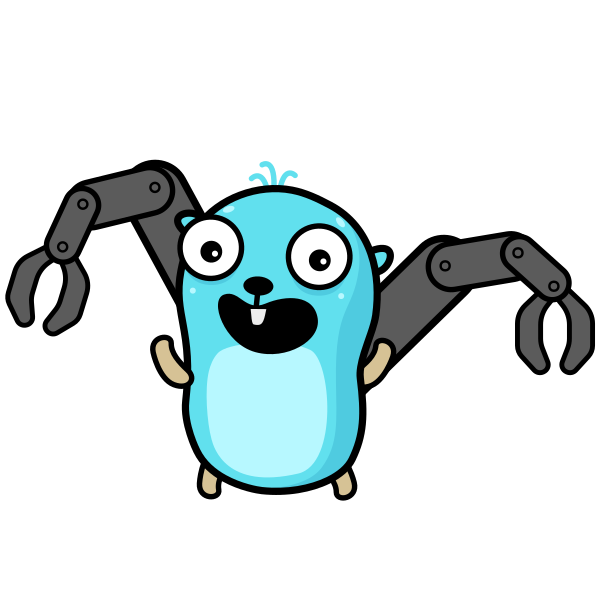

Gofix を知っていますか？
Dennis Metzger
ペパボ & GO
〜 夏のGo祭り2025、あの夏〜
Dennis Metzger
Backend Engineer @ Finatext
import "golang.org/x/net/context"
↓
↓
go fix は Go 1 互換性約束
以前の時代のもの
package pkg
// Deprecated:
// prefer Pow(x, 2).
//go:fix inline
func Square(x int) int {
return Pow(x, 2)
}
↓
$ go run golang.org/x/tools/internal/gofix/cmd/gofix@latest -fix ./...
↓
package pkg
import pkg2 "pkg/v2"
//go:fix inline
func F() {
pkg2.F(nil)
}
↓
$ go run golang.org/x/tools/internal/gofix/cmd/gofix@latest -fix ./...
↓
import "pkg/2"
pkg.F(nil)
package pkg
//go:fix forward
const Ptr = Pointer
↓
$ go run golang.org/x/tools/internal/gofix/cmd/gofix@latest -fix ./...
↓
今後
go fix は一旦廃止予定
cmd/fix: remove all functionality #73605
しかし…
今後
その後、gofix は inline にリネームされ、
go fix はあらゆるモダナイゼーションを
適用するツールに生まれ変わる
proposal: cmd/go: fix: apply fixes from modernizers and gofix analyzers #71859
特にこのLLM時代に
コードのメンテナンスは
ツールにまかせて
おきましょう！
